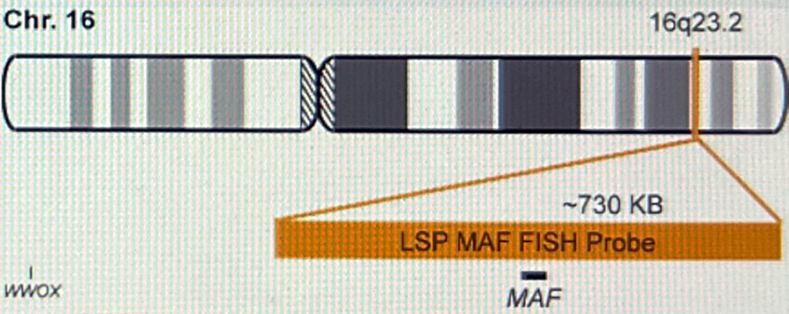
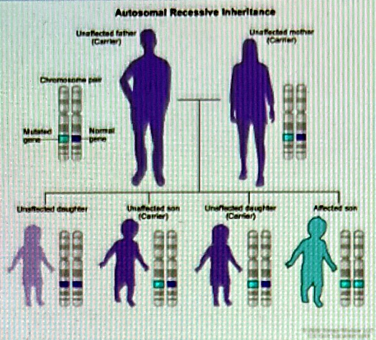
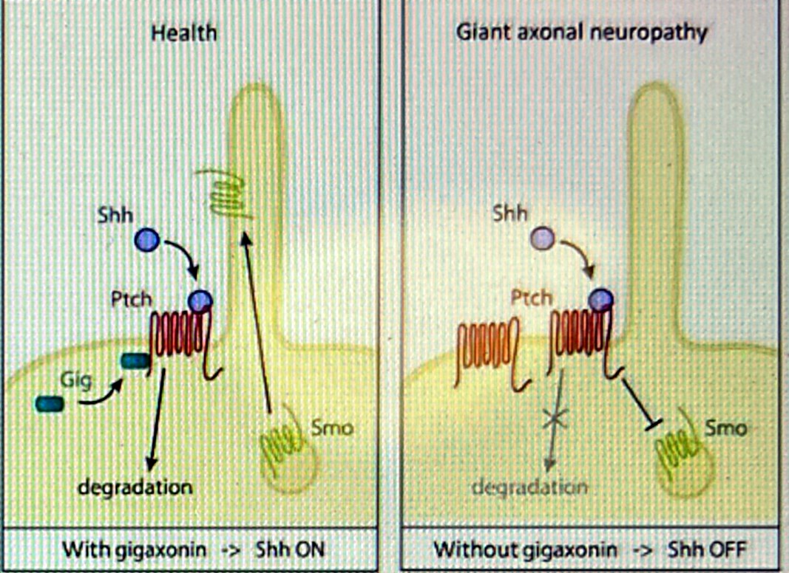
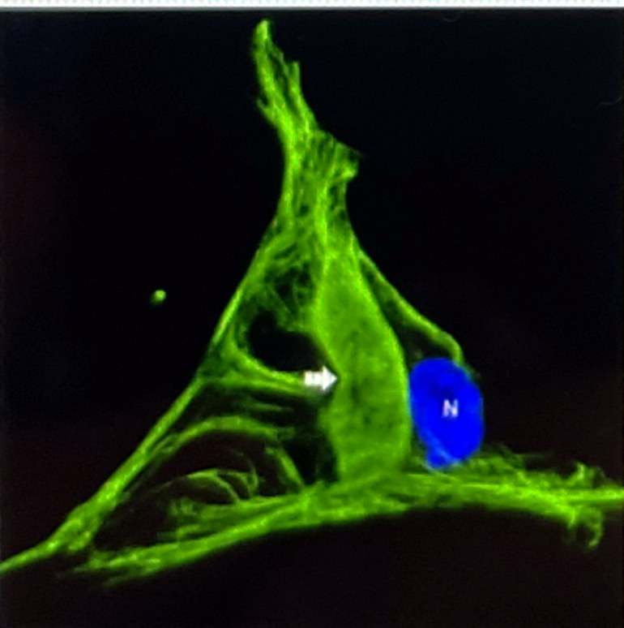
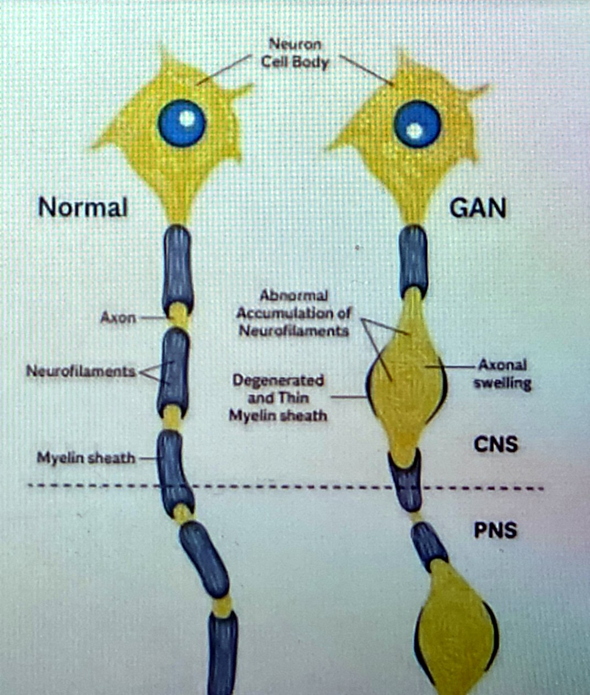
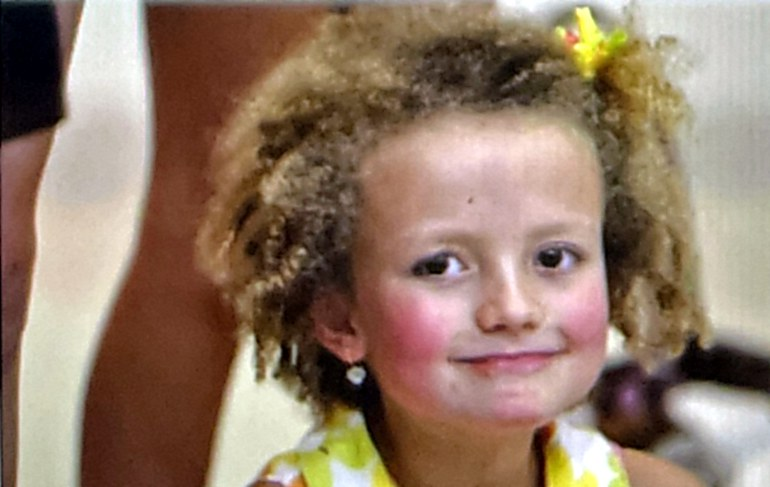

Rare neurogenetic disease · OMIM #256850
How the loss of one small protein, gigaxonin, makes nerve fibres swell and die — and how one family's fight produced the world's first intrathecal gene therapy.
The genetic root cause


What gigaxonin does — and what fails without it


Intermediate filament aggregate
Patient cell — the hallmark of gigaxonin loss (arrow). N = nucleus.
The phenotype, cell by cell

Symptoms and clinical course
Unsteady gait, frequent falls, weak feet and hands, high-arched feet, diminished reflexes. Tightly curled hair unlike either parent is a visible clue.
Loss of vibration and position sense, absent reflexes, muscle wasting below knees and elbows. Nerve biopsy shows giant axons; genetic testing confirms GAN variants.
Wheelchair dependence, cerebellar ataxia, nystagmus, slurred speech, scoliosis, seizures and cognitive decline as brain white matter degenerates.
Swallowing and breathing muscles weaken; most patients die of respiratory failure in the 2nd–3rd decade. Until 2015 there was no treatment beyond supportive care.

The case that changed the field
Hannah's parents found themselves in the unimaginable situation of having funded a clinical trial that might have to exclude their own child.DNA Science, July 2016
The genetic treatment · scAAV9/JeT-GAN · first-in-human intrathecal AAV trial, NIH Clinical Center 2015 (NCT02362438)
scAAV9: a self-complementary AAV9 shell that enters neurons and spreads through spinal cord and brain. No viral genes; does not integrate.
A codon-optimised human GAN gene driven by JeT, a tiny synthetic promoter that fits the compact genome.
One dose — up to 3.5 × 1014 vector genomes — into the CSF, bathing motor neurons and dorsal root ganglia and bypassing the blood–brain barrier.
Transduced neurons make gigaxonin within ~2 weeks, clearing aggregates and letting damaged sensory nerves regenerate.
What the trial showed — NEJM, March 2024
One family with no medical background turned a diagnosis into a first-in-human therapy — proof of what patient-driven science can do.Take-home message
Sources: Bharucha-Goebel DX et al. Intrathecal Gene Therapy for Giant Axonal Neuropathy. N Engl J Med 2024;390:1092-1104 · ClinicalTrials.gov NCT02362438 · NIH News, March 2024 · Hannah's Hope Fund (hannahshopefund.org) · The Children's Inn at NIH, "Hannah's Story" · DNA Science (PLOS), July 2016.
Figures adapted from the source poster: autosomal recessive inheritance, Shh pathway schematic, chromosome 16 ideogram, patient fibroblast immunofluorescence, normal-vs-GAN neuron diagram.